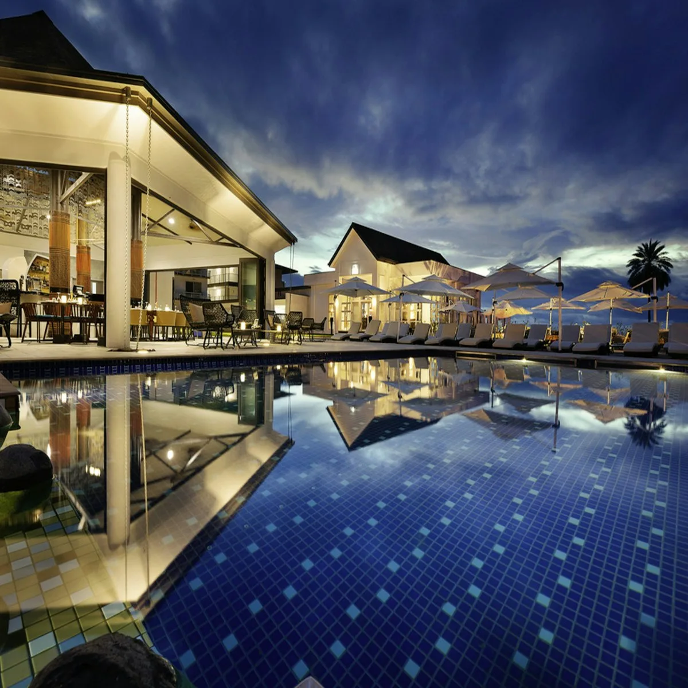
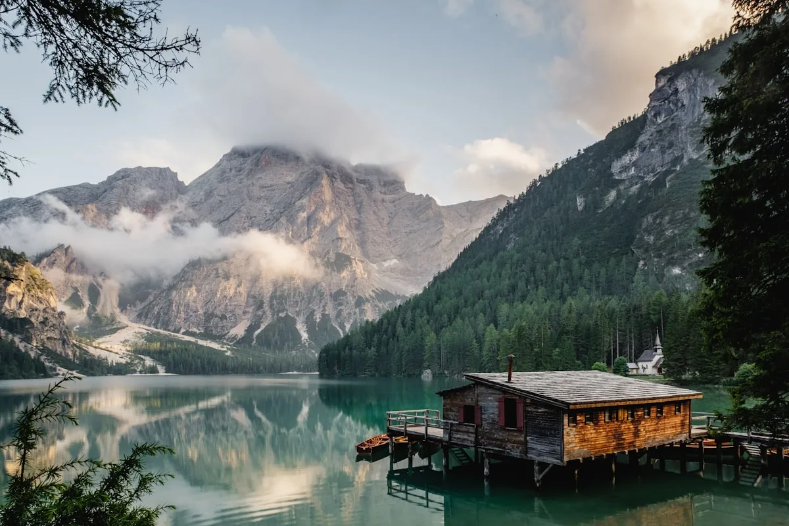

Arrival & Orientation
Guests arrive in the late afternoon specifically to avoid beginning treatments under the stress of travel. The body needs time to register that it has arrived somewhere safe before healing can begin.
The arrival pool — a large natural spring pool of constant 36°C — serves as the transition point between outside world and sanctuary. An hour here before a light meal is the standard first prescription.

Cascade Day
The first full day is devoted entirely to the waterfalls. Morning: thirty minutes under the main cascade for negative ion immersion, followed by guided breathwork at the upper pool. Lunch: garden produce, no alcohol.
Afternoon: free movement through the valley's network of small falls and pools, with no agenda. Evening: the Sound Bath at the lower cascade as the light fades.

Thermal Day
Dawn cold plunge under the upper cascade, followed by thirty minutes in the deep thermal spring. Repeated in cycles across three hours with a VELLUM therapist. This is the most challenging and most transformative part of any stay.
Afternoon: the signature Stone & Water Ritual. Evening: sleep typically comes early and is unusually deep.

Still Water Day
The final day is devoted to stillness — the quality of water that is often overlooked. The lower pool, where the valley widens and water barely moves, is the setting for a three-hour guided meditation and somatic integration session.
Departure happens gently, with a closing consultation and a detailed follow-up protocol to maintain the physiological changes achieved during your stay.
